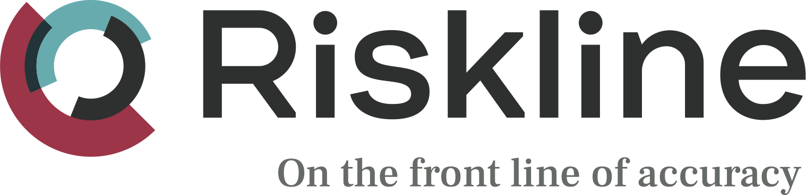

External
{{ incidentReport.title }}
Description
{{ incidentReport.description }}
Risk Level
Low (1)
Moderate (2)
Medium (3)
High (4)
Extreme (5)
Internal
Created
{{ incidentReport.created | date: "MMM dd, yyyy" }}
Start
{{ incidentReport.startDate | date: "MMM dd, yyyy" }}
End
{{ incidentReport.endDate | date: "MMM dd, yyyy" }}
Source
